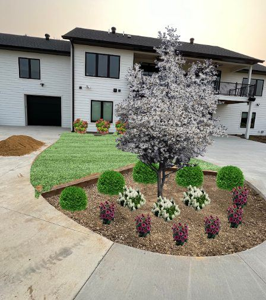

October 14, 2026 · New View Landscaping
By mid-October a lot of people figure the landscaping year is over. It isn't, at least not yet. In Dubuque the ground usually stays workable well into November, and there's a real list of things that are still worth doing, along with a few that are better left until spring.
Planting is still possible, with limits. Trees and many shrubs can go in through October as long as they get watered in well and the ground hasn't frozen. Roots keep growing in cool soil even after the top of the plant has shut down for the year, which gives fall plantings a head start. Tender perennials and anything that needs warm soil to establish are better off waiting.
Spring-flowering bulbs are an October job. Tulips, daffodils and similar bulbs need the cold of winter to bloom, and they should go in before the ground freezes hard. It's one of the cheapest ways to get a big payoff in April.
It's a good time for bed work too. Mulching after the first few frosts, once the plants have gone dormant, helps hold soil temperature steadier through the winter. Edging, regrading small low spots and moving or dividing overgrown perennials can all be done now and will look better for it by spring.
Lawns are mostly finished. Seeding this late has a poor success rate, so if you missed September, you're usually better off waiting for dormant seeding after the ground has cooled or planting in spring. One more mow at a slightly shorter height helps prevent matting under snow, and clearing leaves off the lawn keeps them from smothering the grass.
What should wait: most hardscape, since pavers, patios and walls need a solid, workable base and dry conditions, and anything involving big grade changes close to freezing. If one of those is on your list, this is the right time to get a plan and estimate in place, so the work can start as soon as spring allows.
Trees, shrubs and perennials picked for the spot, not just what looked good at the nursery.
Learn MoreEveryone thinks spring is planting season. For trees and shrubs in our climate, fall usually gives better results, and the window is shorter than people expect.
Not a matter of one being better than the other. Mulch and rock solve different problems, and picking wrong means redoing the bed sooner than you should have to.
Iowa winters are hard on patios. Here's the real difference between pavers and poured concrete once freeze-thaw cycles are in the picture.